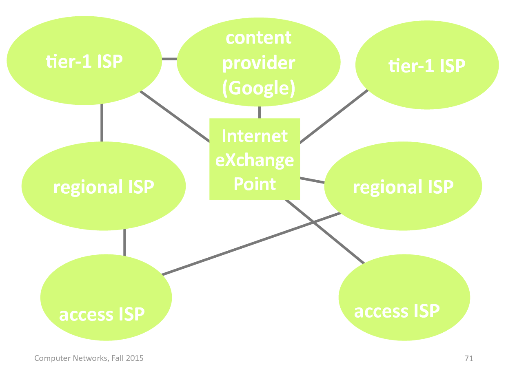
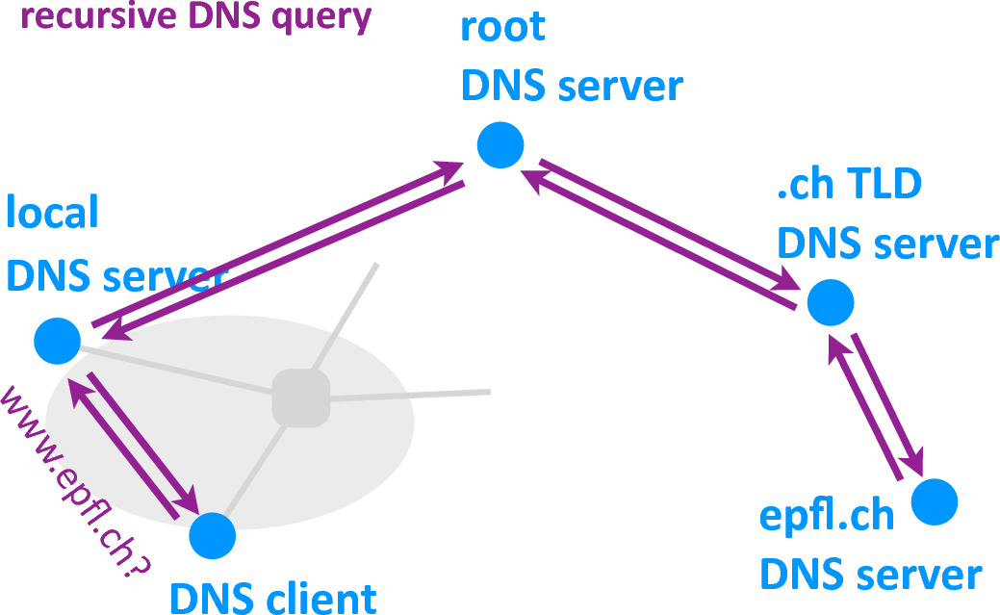
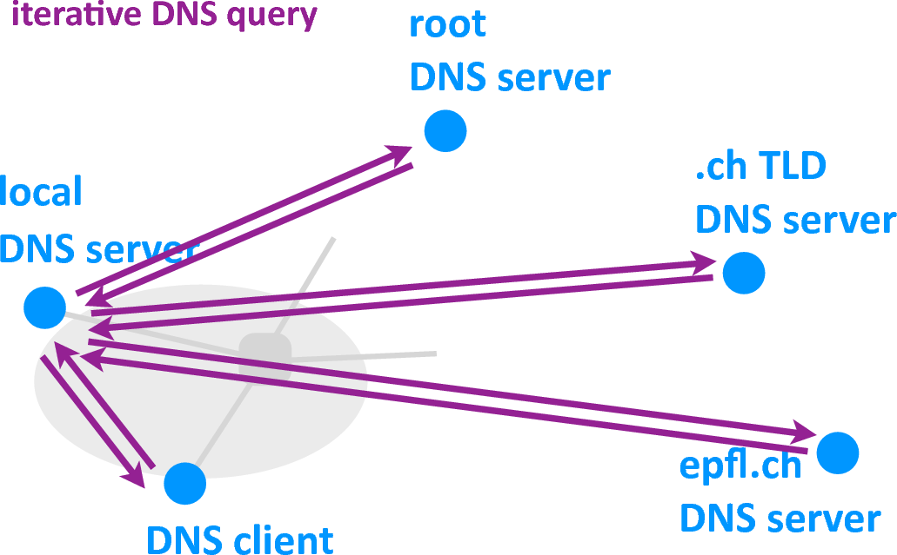
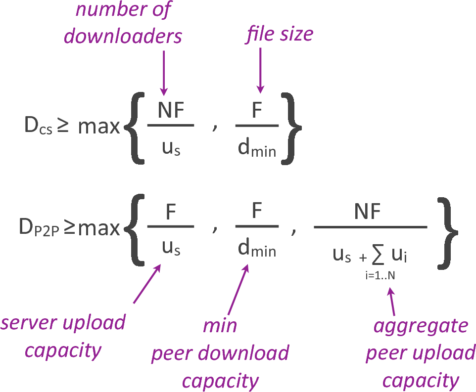
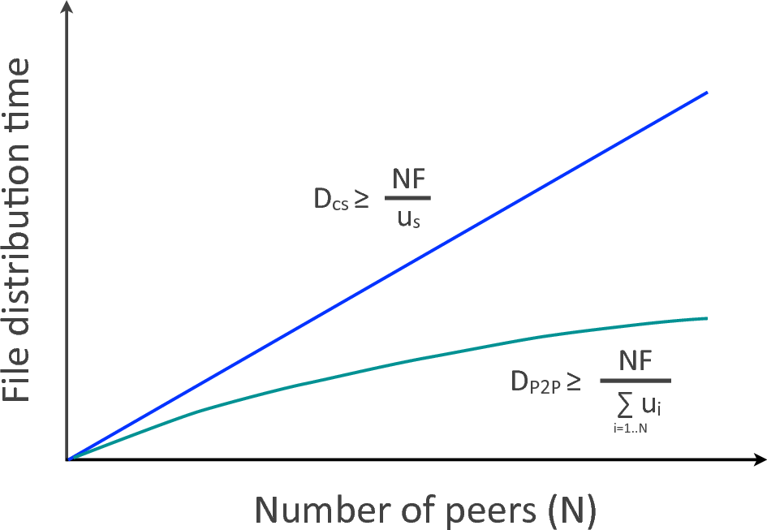
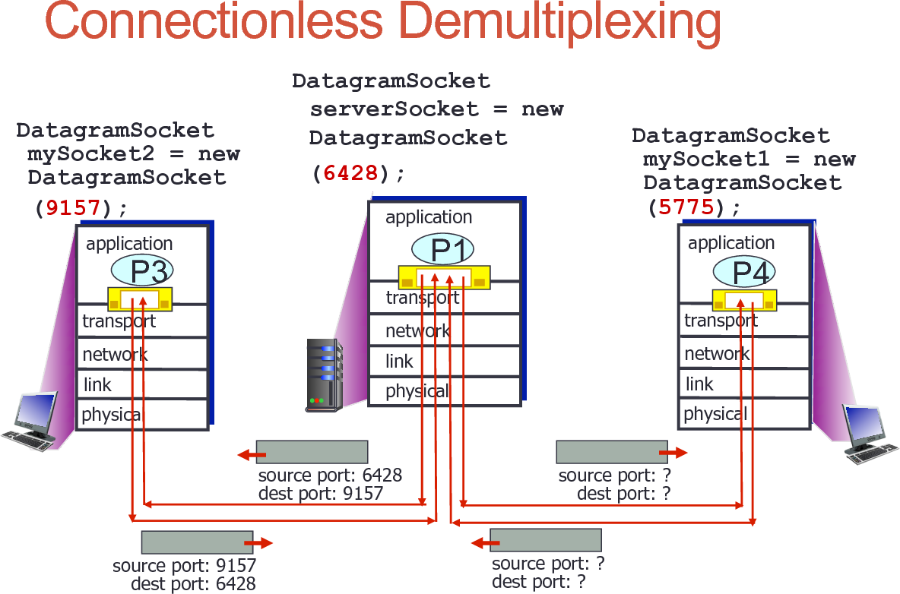
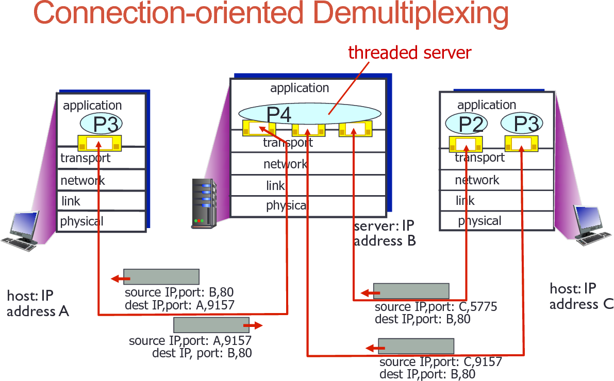

Computer Networks
Table of Contents
- 1. Chapter 1
- 2. Chapter 2
- 3. Chapter 3
- 4. HW1
- 5. HW2
1 Chapter 1
1.1 Definitions
1.1.1 Network
A network is made of
- end-systems (server or client)
- Internet Service Provider (ISP)
- Links
- Switches
1.1.2 Acess network
1.1.2.1 Digital Subscriber Line (DSL)
- Uses existing telephone line
- Dedicated line
1.1.2.2 Cable network
- Shared line
1.1.2.3 Enterprise acess networks (ethernet)
- Used by companies/universities
- Instituional link to ISP
- Use of ethernet switches
1.1.2.4 Wireless networks
- Local or wide-area (cellular networks)
1.1.3 Protocol
A protocol defines format, order of messages sent and received among network entities and actions taken on message transmisson/receiption.
1.1.4 Packets
- Host divides what he want to send into chunks called packets of length \(L\)
- transmit packet into network at transmission rate \(R\)
1.1.5 Routing
Determines source-destination route taken by packets → routing algorithms
1.1.6 Forwading
Move packets from router's input to appropriate router output
1.1.7 Switch contents
- Buffers → store data
- Forwading table
- Store meta-data
- Indicate where to send the data
1.1.8 Throughput
Rate (bps) at which bits are transferred between sender/receiver. Depends on the bottleneck link (slowest link). Meaning that the average throughput is equal to the minimum link bandwith of network.
1.1.9 Round-trip time (RTT)
Time it takes for a signal to be sent plus the length of time it takes for an acknowledgment of that signal to be received.
1.2 Concepts
1.2.1 Circuit vs packet switching
| Circuit-switching | Packet-switching |
|---|---|
| resources reserved per active connection | Packets treated on demand |
| admission control & forwarding decision : per connection | admission control & forwarding decision : per packet |
| inefficient resource use | efficient ressource use |
| predictable performance | unpredictable performance |
| simpler to implement, but requires congestion control | |
| allow more user to use the network |
1.2.1.1 Circuit-switching
- End to end resources reserved for "call" between source and destination
- No sharing : circuit-like (guaranteed) performance
- Twos implemation :
- Time Division Multiplexing (TDM)
- Divides time in time slot
- separate time slot per connection (burst at full speed)
- Frequency Division Multiplexing (FDM)
- Divide frequency spectrum in frequency bands
- separate frequency band per connection
- Time Division Multiplexing (TDM)
1.2.1.2 Packet-switching
- Hosts break application-layer messages into packer
- Forward packets from one routeur to the next, across links on path from source to destination
- Each packet transmitted at full link capacity
- Store and forward : entire packet must arriver at routeur before it can be transmitted on next link
- If arrival rate (bits) to link > transmission rate of link :
- packet will queue, waiting to be transmitted
- packets can be dropped (lost) if buffer fills up
1.2.2 Internet organization

1.2.3 Delay
We have that :
dnodal = dproc + dqueue + dtrans + dprop
- dtrans : transmission delay
- Time needed to push all the bits of a packet into a link
- L: packet length (bits)
- R: link bandwidth (bps)
- dtrans = L/R
- dprop: propagation delay
- Time needed to move one bit from one end of a link to the other
- d: length of physical link
- s: propagation speed in medium
- dprop = d/s
- dproc: nodal processing
- check bit errors
- determine output link
- typically < msec
- dqueue : queuing delay
- time waiting at output link for transmission
- depends on congestion level of routeur (and burstiness of arrival)
- statistical mesure
- Way to analyse :
- units :
- L: packet length (bits)
- R: link bandwidth (bps)
- a: average packet arrival rate
- analysis :
- La/R ~ 0 : average queuing delay small
- La/R ~ 1 : average queuing delay large
- La/R > 1 : more "work" arriving than can be serviced, average queuing delay infinite
- units :
1.2.4 Internet layering
- application : application that exchange messages
- transport : transports segments between processes
- network : move datagrams between hosts
- link : moves frames across a link
- physical : moves data across a physical medium
Advantages :
- reduce complexity
- improve flexibility
1.2.5 Security
Different ways of attacking :
- Malware
- Denial of Service (DoS)
- Packet sniffing (eavesdropping)
- Ip spoofing (impersonating)
2 Chapter 2
2.1 Application architectures
2.1.1 Client-server architecturea
- Clear separation of roles
- Server runs on dedicated infrastrure
2.1.2 Peer-to-peer architecture
- A peer may act both as client and server
- Peer runs on personally owned end-system
2.2 Internet transport services
Both offers no security and performance (delay and bandwidth) guarantees
2.2.1 TCP
- reliable, in-order message delivery
- "connection-oriented" or "stateful"
- flow and congestion control
- Can be persistent or non-persistent (modern browser → persistent)
- Can be one or multiple connection (mordern browser → multiple)
2.2.2 UDP
- only the adress of the client/server is stored
- doesn't keep any state about the packet
- lost packets are not retransmitted
- used-in time-critical applications
- voice transmission
- video chat
2.3 HTTP
- web's application layer protocol
- uses TCP
- Stateles
- Persistent or non persistent
- non persistent at most one object per connection
- persistent multiple object sent over one TCP connection
- Request types
- GET: client requests to download a file
- POST : client provides information
- PUT : client requests to upload a file
- DELETE : client requests to delete a file
- Response types
- OK
- Not found
- Moved permanently
- Bad request
- …
- Cookies
- state kept by server
- links previous HTTP requests to the same web client
- privacy issues, user-tracking
2.4 Web caching
- cache copies of other web-server files
- act as a web server to nearby web clients
- lower bandwidth usage
- Ensure file is fresh with "conditional GET" request
2.5 Web design
- Architecture : client-server architecture
- Communication protocol : HTTP requests & responses
- Transport service : TCP (typically with persistent TCP connections)
2.6 Domain Name Service (DNS)
Hostname to IP adress translation
2.6.1 Why not centralize DNS ?
- single point of failure
- too much traffic volume
- cannot be close to all DNS client
- maintenance
- doesn't scale
2.6.2 Hierachy
- root servers
- TLD (top-level domain) servers (e.g. .ch servers)
- authoritative servers (e.g. epfl.ch servers)
2.6.3 Local DNS Server
- does not belong to hierachy
- all ISPs have one
- DNS queries are first sent to it
- acts as a proxy : when getting a mapping to an IP it will store it in order to reuse it for other clients
2.6.4 Query
2.6.4.1 Recursive query
- puts burden of name resolution on contacted name server
- heavy load at upper levels of hierachy

2.6.4.2 Iterative query
- contacted server replies with name of server to contact
- "I don't know this name, but ask this server"

2.6.5 Caching
- Caching of DNS responses at all levels
- Reduces load at all levels
- Reduces delay experienced by DNS clients
2.6.6 Design
- Architecture
- client-server: DNS client - local DNS server
- client-server: local DNS server - hierachy
- Communication protocol
- DNS queries & replies
- Resource Records (RR)
- Transport service
- UDP
2.6.7 Attacking
- Impersonation : give the wrong IP adress to the DNS client
- DDOS of root server of TLD : make them unavailable to the rest of the world
- Poison the cache of a DNS server : increase delay experienced by DNS clients
2.7 Peer-to-Peer (P2P) applications
2.7.1 File distribution time
(times it takes to get a copy of the file to all N clients)

- Client-server (CS) : time increases linearly with the number of clients
- Peer-to-peer (P2P) : time increases sub-linearly with the numbers of peers

2.7.2 BitTorrent
- file divided into chunks
- peers in torrent send/receive chunks
- Each peer is given an id
2.7.2.1 Design
- Who gives the metadata ?
- Server
- peers obtains file with metadata from server
- uses content to obtain the data from peers
- Set of peers, with help from server
- peer obtains pointer to metadata from servers
- uses pointer to obtain metadata from peers
- uses metadata to obtain the data from peers
- Server
- Who gives the ID's of the peers ?
- server (= tracker) : one node that keeps track of which peers have the given content
- set of peers, thru distributed hash table : distributed structure that keeps track of which peers have what content
- Who gives the data ?
- set of peers
2.7.2.2 Circular DHT
- Each peer only aware of immediate successor and predecessor
- "overlay network"
2.7.2.3 Peer churn
- peers may come and go (churn)
- each peers knows adress of its two sucessors
- each peer periodically pings its two sucessors to check aliveness
- if immediate sucessor leaves, choose next sucessor as new immediate sucessor
2.8 Socket programming
2.8.1 UDP
- no connection between client and servers
- no handshake before sending data
- sender explicitly attaches IP adress and port number of the destination to each packet
- receiver extracts IP address and port number from the received packet
- Transmitted data may be lost or received out of order
Application viewpoint: UDP provides unreliable transfer of group of bytes (“datagram”) between client and servers
2.8.2 TCP
- Client process must contact server
- Create socket, specifying IP address, port number of server process
- Establish connection to server TCP (handshake)
- Server process
- Must be running already
- Must have created TCP socket that welcomes client’s contact
- Server creates new socket whenever contacted by a client
-Communication socket used to communicate with that particular client
- Source IP + source port numbers used to distinguish clients
Application viewpoint: TCP provides reliable, in-order byte-stream transfer (“pipe”) between client and server
3 Chapter 3
3.1 Multiplexing and Demultiplexing
- Multiplexing at sender : handle data from multiple sockets, add transport header (later used for demultiplexing)
- Demultiplexing at receiver : use header to deliver received segments to correct socket
Demultiplexing
- Host receices IP datagrams
- each datagram has source IP adress, destination IP adress
- each datagram carries one transport-layer segment
- each segment has source, destination port numbers
- Host use IP addresses & port numbers to direct segment to appropriate socket
3.1.1 Connection-less Demultiplexing (UDP)
- Socket has local port number
- Datagram to be sent into UDP socket specifies : destination IP adress + destination port number
- UDP socket identified by two-tuple
- (destination IP adress, destination port number)
- Receiver uses destination port number to direct UDP segment to the appropriate socket
Datagrams with same destination port directed to the same socket at destination

3.1.2 Connection-oriented Demultiplexing (TCP)
- TCP socket identified by 4-tuple :
- (source IP addresse, source port, destination IP address, destination port)
- receiver uses all 4 values to direct segment to appropriate socket
- Server waits for connections on "welcoming socket"
- creates new "communication socket" for each new connection
- associates the 4-tuples with the new socket
- Example : web servers
- persistent HTTP - different socket for each connection client
- non-persistent HTTP - different socket for each request

3.2 Reliable data transfer
3.2.1 Checksum
- Redundent information
- e.g., the binary sum of all data bytes
- sender adds checksum to each segment
- Used to detect (+correct) data corruption
- receiver recomputes checksum to detect corruption
- (potentially uses checksum to correct corruption)
3.2.2 Acknowledgment
- Feedback from receiver to sender
- receiver determines whether a segment is corrupted
- sens positive or negative ACK
- Use to overcome data corruption
- if receiver sends a negative ACK, sender retransmits
3.2.3 Seqence numbers
- An identifier for segments
- sender includes a sequence number in each segement
- receiver includes a seqence number in each ACK
- Use to disambiguate between segements
- sender indicates whether it sends new segement
- receiver indicates which was the last segment that was correctly received
3.2.4 Timeout + ACK
- Timeout = an expected ACK is late
- the receiver communicates to the sender which was the last correct packet it received
- Use to overcome data loss
- if the sender's timeout expires, the sender retransmits
3.2.5 RDT elements
- Checksums → detect data corruption at receiver
- ACK + retransmissions → overcome data corruption
- Timeouts + ACK + retransmissions → overcome data loss
3.2.6 Stop and wait
- Poor sender utilization → the sender does nothing while waiting for the receiver's ACK or timeout
- Time it takes : Transmission delay (L/R) + RTT (2x propagation delay)
- Server utilization : transmission of N packets /(transmission + RTT)
3.2.7 Pipelining
Better sender utilization, the sender sends up to N un-ACKed segments (N = sliding window size)
Then, two ways :
3.2.7.1 Go-back-N
- The receiver accepts 0 out-of-order segmeents
- Acks are cumulative
- ACK for segment 10 indicates that all segements until segment 10 have been received
- When the sender retransmits, it retransmits all the un-ACK-ed segments
3.2.7.2 Selective Repeat
- The receiver accepts N-1 out-of-order packets
- Acks are selective
- Ack for segment 10 indicates that segment 10 has been received
- When the sender retransmits, it retransmits only one segment
4 HW1
Imagine dend-to-end between 2 links is D, imagine now N links, to send P packets, time taken is N*D+(P-1)*D, in words, time for the first packet to reach destination + time for all the other packets to go from last link to destination
Max user in a FDM of total speed S and required speed sreq : S/sreq
Max user for TDM : Suppose that the duration of a frame is T sec. Suppose also that the number of timeslots in the frame is U. Since the same slot is assigned always to the same user, U is also equal to the number of users. Therefore, a user that requires sreq transmitting rate, has to send (T ∙ sreq) kbits of data during the timeslot which is assigned to him. On the other hand, one may send up to S ∙ T/U kbits during that timeslot. So T ∙ sreq ≤ S ∙ T/U ⇒ U ≤ S/sreq
Suppose a system with N users, probability that a user is transmitting is p, probability that n user use the link simultaneously : \(\binom{N}{n}\) pn (1-p)N-n
Maximum number of bit on a link of speed R (continuous file sending) : R∙dprop
5 HW2
Time to get ip-address from name (cache empty), with n servers and constant delay of D between any two machines (RTT=2D) : 2nD. Now if cache contains name : 2D
Non persistent HTTP routine : TCP-handshake-TCP-handshake reply (1RTT), GET page.html-200 OK (page.html) (1RTT) and then for each element to load : TCP-handshake-TCP-handshake reply (1RTT) + GET object… - 200 OK (object…) (1RTT). So time to load a page with n objects = (n+1)*RTT (Where you may need to add DNS delay)
Non persistent HTTP in parallel, n=pk objects, p parallel connections : We need to do 2(n/p) = 2k roundtrip, so time is : (DNS delay) + 2RTT (= initial handshake + get page.html) + 2k RTT
Persistent HTTP single connection : (DNS delay) + 2 RTT (=initial handshake + get page.html) + RTT (only if transmission delay for sending n requests and n replies is negligeable)